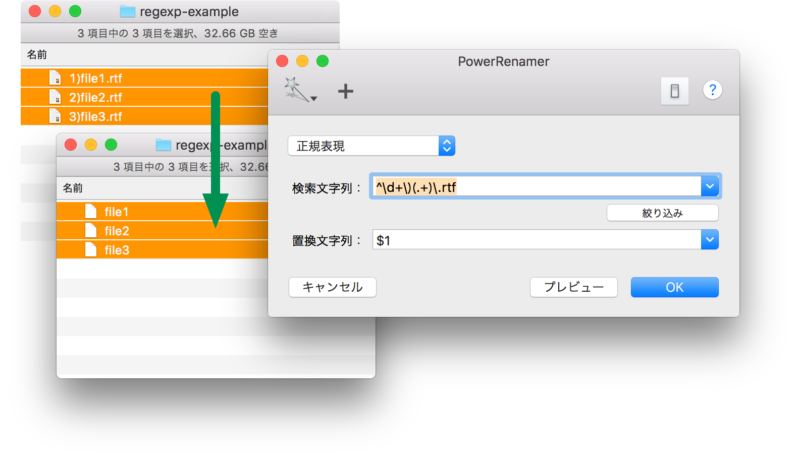

PowerRenamer ヘルプ
正規表現による検索置換
選択の絞り込み
|
番号付け
正規表現による検索置換
正規表現（使える正規表現については
こちら
をご参照ください。）で検索文字列を指定することができます。正規表現を使えば、ほとんど何でもできます。
正規表現のエスケープ文字はバックスラッシュ「\」です。option + ¥ キーで入力してください。
「置換文字列」 で、正規表現の後方参照を使うことができます。
つまり、$0, $1, ... で、正規表現にマッチした文字列の全体もしくはグループを引用することができます。
拡張子と先頭の番号付けを削除する例です。

選択の絞り込み
|
番号付け